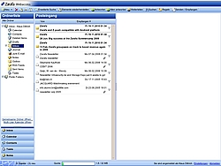

Zarafa
Archivierte Anleitung
Dieser Artikel wurde archiviert, da er - oder Teile daraus - nur noch unter einer älteren Ubuntu-Version nutzbar ist. Diese Anleitung wird vom Wiki-Team weder auf Richtigkeit überprüft noch anderweitig gepflegt. Zusätzlich wurde der Artikel für weitere Änderungen gesperrt.
Artikel für fortgeschrittene Anwender
Dieser Artikel erfordert mehr Erfahrung im Umgang mit Linux und ist daher nur für fortgeschrittene Benutzer gedacht.
Zum Verständnis dieses Artikels sind folgende Seiten hilfreich:
Zarafa 
 ist ein kommerzieller Groupware-Server mit Ursprung in den Niederlanden, der die Funktionen eines Microsoft Exchange Servers übernehmen kann. Damit wird Benutzern ermöglicht, gemeinsam E-Mails, Kalender, Kontakte und Notizen zu verwalten. Neben kommerziellen Versionen gibt es eine "Community Edition" unter der AGPL Lizenz, die
ist ein kommerzieller Groupware-Server mit Ursprung in den Niederlanden, der die Funktionen eines Microsoft Exchange Servers übernehmen kann. Damit wird Benutzern ermöglicht, gemeinsam E-Mails, Kalender, Kontakte und Notizen zu verwalten. Neben kommerziellen Versionen gibt es eine "Community Edition" unter der AGPL Lizenz, die
kostenlos verfügbar ist und
in diesem Artikel beschrieben wird.
Darüber hinaus existiert eine Erweiterung der "Community Edition", die eine Lizenz zur Anbindung von max. 3 Outlook-Clients beinhaltet. Bei diesem Connector handelt es sich aber um unfreie Software.
Der Schwerpunkt der Software liegt in der Unterstützung oder Migration von Microsoft Outlook. Eine Online-Demo vermittelt einen ersten Eindruck der Möglichkeiten. Außer Zarafa gibt es noch weitere Alternativen zu Outlook / MS-Exchange unter Linux .
Hinweis:
Dieser Artikel beschreibt die Installation der Version 6.40 aus der Paketquelle Canonical Partner. Zarafa unterstützt offiziell lediglich die LTS-Versionen von Ubuntu (Quelle: Beitrag im Zafara-Forum ).
Installation¶
|  |
| Zarafa 6.40 WebAccess |
Voraussetzungen¶
Mailserver: Mailserver Einführung, Postfix
Datenbankserver: MySQL 5
Alternativ kann man zum Testen auch eine z.T. vorkonfigurierte virtuelle Maschine auf Basis von Ubuntu 10.04 verwenden (benötigt VMware Player oder VMware Server; siehe auch Virtualisierung). Eine weitere Möglichkeit ist die auf Ubuntu basierende Server-Distribution Zentyal.
MySQL¶
Zarafa braucht eine Datenbank zur Speicherung der Daten. In der hier beschriebenen Anleitung wird MySQL als Datenbank verwendet. Falls ein anderes Datenbanksystem verwendet werden soll, wird auf die Dokumentation zu Zarafa verwiesen.
Weiterhin ist es empfehlenswert, unter Ubuntu auch einen neuen Benutzer zarafa anzulegen (siehe Benutzer und Gruppen), der nur über eingeschränkte Rechte verfügen sollte. Allerdings sollte dieser alle Rechte auf die verwendete Datenbank haben.
Zum Anlegen der Datenbank und des MySQL-Benutzers kann auch phpMyAdmin verwendet werden. Die entsprechende URL im Webbrowser lautet: http://<Server-IP>/phpmyadmin oder http://localhost/phpmyadmin (nur auf dem Server selbst möglich). Nach Anmeldung als Root (Benutzername root, ohne Kennwort) wird der Menüpunkt "Rechte -> Neuen Benutzer hinzufügen" ausgewählt und dann ein Nutzer mit folgenden Daten angelegt:
Benutzername: beliebig, z.B.
zarafaHost:
localhost(die Datenbank befindet sich auf dem gleichen Rechner)Kennwort:
********(beliebig wählbar)Datenbank für Benutzer: erstelle eine Datenbank mit gleichem Namen und gewähre alle Rechte
Es empfiehlt sich, an dieser Stelle auch ein MySQL-Passwort für den Benutzer root zu vergeben, falls nicht schon bei der Installation von MySQL geschehen.
Fremdquelle¶
Zarafa ist nicht in den offiziellen Paketquellen enthalten. Man kann aber Canonical Partner als Paketquelle [1] nutzen. Anschließend lassen sich die Pakete:
zarafa
zarafa-webaccess
zarafa-libs
zarafa-licensed
installieren [2] (siehe auch Installing Zarafa from Ubuntu Repository ).
Manuell¶
Vor der eigentlichen Installation müssen noch folgende Pakete, falls nicht vorhanden, installiert werden:
libcurl3
libldap-2.4-2 (nur wenn LDAP zur Benutzerverwaltung verwendet werden soll)
Version 6.40¶
Die Community-Version von Zarafa kann als vorkompilierte Binärversion von der Downloadseite heruntergeladen werden. Da die Installation von Zarafa nur auf einem Server sinnvoll ist, werden dort auch nur die Serverversionen mit LTS-Support aufgeführt. Es werden .tar.gz-Archive (die .deb-Pakete enthalten) für
Ubuntu 6.06 (nicht mehr durch Canonical unterstützt)
Ubuntu 8.04 und
angeboten. Des weiteren kann man zwischen der reinen Open Source-Variante und einer Version, die einen Outlook-Connector enthält, wählen. Nachdem man das Paket heruntergeladen hat, wird es mit folgenden Befehl [3] in das aktuelle Verzeichnis entpackt [4]:
tar -xzvpf zarafa-VERSION-Ubuntu-VERSION-SYSTEMARCHTEKTUR.tar.gz
Hierbei ist VERSION-Ubuntu-VERSION-SYSTEMARCHTEKTUR durch die für das eigene System zutreffenden Angaben zu ersetzen, also beispielsweise i386 für 32-Bit und der x86_64 für 64-Bit Systeme.
Anschließend installiert man die Pakete. Dazu wechselt man in das Verzeichnis, in das die Dateien entpackt wurden:
cd zarafa-VERSION-Ubuntu-VERSION-SYSTEMARCHTEKTUR
Danach installiert man die einzelnen Pakete mit dem folgenden Befehl [5] und Root-Rechten:
sudo dpkg -i zarafa* sudo dpkg -i lib*
Alternativ kann auch das mitgelieferte Script install.sh ausgeführt werden, welches die benötigten Pakete installiert, Einstellungen abfragt und diese gleich in die Konfigurationsdateien einträgt. Bei einer Erstinstallation sollte install.sh verwendet werden, bei einem Upgrade besser sudo dpkg -i.
Jetzt ist Zarafa bereits gestartet und läuft somit. Allerdings sind noch einige Einstellungen anzupassen.
Version 7.0¶
Die aktuelle Version 7.0.x steht bei Zarafa zum Download  bereit. Der Name der erforderlichen Archivdatei zcp-VERSION-ubuntu-VERSION-SYSTEMARCHITEKTUR-LIZENZ.tar.gz setzt sich aus folgenden Bestandteilen zusammen:
bereit. Der Name der erforderlichen Archivdatei zcp-VERSION-ubuntu-VERSION-SYSTEMARCHITEKTUR-LIZENZ.tar.gz setzt sich aus folgenden Bestandteilen zusammen:
zcp- "Zarafa Collaboration Platform"VERSION- Zarafa Versionubuntu- Zielplattform bzw. LinuxdistributionVERSION- Version der ZielplattformSYSTEMARCHITEKTUR- "i386" oder "x86_64"LIZENZ- "free" oder "opensource" (mit bzw. ohne Outlook-Connector)
Nach dem Herunterladen folgt man der Anleitung für Version 6.40.
Konfiguration¶
Man muss Zarafa noch den angelegten Benutzer für die MySQL-Datenbank mitteilen. In der Datei /etc/zarafa/server.cfg trägt man im Abschnitt "MySQL" die Daten des oben angelegten Benutzers ein [6].
Lizenz¶
Wer keine Serien-Nummer hat, lässt diese leer:
sudo echo "Serien-Nummer" > /etc/zarafa/license/base
Postfix¶
Auch der Mailserver Postfix muss noch konfiguriert werden. Dazu wird die Datei /etc/postfix/main.cf editiert und folgende Zeilen angefügt.
mailbox_command = /usr/bin/zarafa-dagent "$USER" mailbox_transport = zarafa: zarafa_destination_recipient_limit = 1
Wer eine eigene Maildomain berücksichtigen möchte, sucht den Eintrag mydestination = ... in dieser Datei und ändert ihn ab:
# eigene Maildomain statt example.com eintragen, ansonsten entfernen mydestination = hostname.local, example.com, localhost.hostname.local, localhost
Auch die Datei /etc/postfix/master.cf muss noch bearbeitet werden:
zarafa unix - n n - 10 pipe
flags=DRhu user=vmail argv=/usr/bin/zarafa-dagent -R ${recipient}Abschließend wird noch ein eigener Benutzer vmail angelegt:
sudo adduser --system --no-create-home vmail
Dieser Benutzer muss auch in der Datei /etc/zarafa/server.cfg der Variablen local_admin_users hinzugefügt werden.
Dienste neu starten¶
Nun werden der Web- und der E-Mail-Server neu gestartet:
sudo /etc/init.d/apache2 restart sudo /etc/init.d/postfix restart
Nachdem man dies erledigt ist, muss Zarafa die Datenbank mit Werten füllen. Hierzu reicht es aus, den Dienst zu starten:
sudo /etc/init.d/zarafa-server start
oder - falls der Dienst schon gestartet sein sollte - mit:
sudo /etc/init.d/zarafa-server restart
neuzustarten. Nun sollte die Datenbank mit Standardwerten gefüllt worden sein.
Verwendung¶
Der Zugriff auf Zarafa erfolgt wahlweise über
die Weboberfläche (WebAccess) via
http://<Server-IP>/webaccessoderhttp://localhost/webaccess(nur auf dem Server selbst möglich)
geeignete E-Mail Programme wie z.B. Thunderbird (bei Bedarf inkl. Lightning)
Mobilgeräte wie Smartphones und PDAs via Z-Push
Um einen neuen Benutzer in Zarafa einzurichten (der dafür keinen Account/Zugang auf dem Rechner benötigt), kann man folgenden Befehl verwenden:
sudo /usr/bin/zarafa-admin -c benutzername -p password -e benutzername@example.com -f "Vorname Nachname"
Hinweis:
Eine grafische Weboberfläche zur Verwaltung von Zarafa gab es bisher nicht. zarafa-admin ist offiziell nur für die älteren Versionen 6.20 und 6.30 verfügbar und wurde im Rahmen dieses Artikels nicht getestet. Diese Lücke will Z-Admin (ab Version 7.0) füllen.
Problembehebung¶
Dateianlagen¶
In der Standardeinstellung werden alle Anlagen (attachments) in der Zarafa-Datenbank gespeichert. Dies hat den Vorteil, dass man diese einfach komplett sichern kann. Nachteilig ist unter Umständen aber die wachsende Größe der Datenbank, insbesondere da viele Benutzer ihr Postfach nicht pflegen bzw. das Postfach als Datensicherung/Backup für ihre Anlagen verwenden.
Ab Version 6 ist in Zarafa das Werkzeug /usr/share/zarafa/db-convert-attachments-to-files enthalten, das Anlagen aus der Datenbank entfernt und im Dateisystem ablegt.
max_allowed_packet is read-only¶
Wenn der verwendete MySQL-Benutzer nicht genügend Rechte besitzt, kann folgende Fehlermeldung in der Datei /var/log/zarafa/server.log auftauchen:
082FB6D0: SQL Failed: SESSION variable 'max_allowed_packet' is read-only. Use SET GLOBAL to assign the value, Query: -SET max_allowed_packet = 16777216- Unable to connect to database: SESSION variable 'max_allowed_packet' is read-only. Use SET GLOBAL to assign the value
Diese SQL-Meldung sagt aus, dass der gegenwärtige Benutzer die Option read-only nicht ändern darf. In diesem Falle sollten die Berechtigungen nochmals kontrolliert werden. Alternativ kann in der Datei /etc/mysql/my.cnf auch direkt max_allowed_packet = 16M gesetzt werden. Anschließend muss der MySQL-Server neu gestartet werden.
Achtung!
Diese Änderung in der Datei /etc/mysql/my.cnf muss im Abschnitt "[mysqld]" erfolgen!
Links¶
Zarafa - Wikipedia
Zarafa
- Ubuntu Community DocumentationOpen-Source-Mapi und Active Sync mit Zarafa 6.40 - A la Giraffe
- Artikel Linux Magazin 05/2010Howto Zarafa 6.2 auf Ubuntu 8.04.1 mit Postfix und Fetchmail
Zentyal - grafische Oberfläche für einen Ubuntu-Server, die bereits ein Modul für Zarafa mitbringt
bitkit4FREE
- Serverlösung mit Zarafa und PDF-DruckerDavMail Gateway
- POP/IMAP/SMTP/Caldav/Carddav/LDAP Gateway für Exchange
- Erstellt mit Inyoka
-
 2004 – 2017 ubuntuusers.de • Einige Rechte vorbehalten
2004 – 2017 ubuntuusers.de • Einige Rechte vorbehalten
Lizenz • Kontakt • Datenschutz • Impressum • Serverstatus -
Serverhousing gespendet von